![Рис. 13. Grafana-дашборд «Niche Research Agent» после серии запусков. Все 11 панелей живые: **12.3** LLM-запросов за час, **p95 = 58.5 секунд**, **0 JSON parse failures** (repair-loop в OllamaClient справляется), **30 892 токена** total. Распределение LLM latency by JSON mode показывает, что json-вызовы дольше plain-text — это нормально, JSON-режим в Ollama требует grammar-constrained decoding. На графике LLM throughput by outcome видны редкие network_error (это были httpx.ReadTimeout до фикса) — фиксы по таймауту попали в commit-историю проекта](screens/screen-14.png)
Автор: Идрисов Данияр Фаритович, группа 11-561
Репозиторий проекта: https://github.com/DaniyarIdrisov/niche-research-agent
Документация проекта: https://github.com/DaniyarIdrisov/niche-research-agent/tree/main/docs
В работе спроектирована и реализована мультиагентная система для автоматизации первичного ресёрча ниши на маркетплейсе Wildberries в категории малой бытовой техники (МБТ). Система принимает запрос пользователя на естественном языке (например, «оцени нишу — электрические зубные щётки до 3000 рублей») и возвращает аналитический отчёт по нише, формализованный Product Requirements Document (PRD) на новый товар, анализ уникальных торговых предложений конкурентов и итоговый вердикт go / no-go.
Архитектура построена по паттерну Supervisor + специализированные воркеры на фреймворке LangGraph, включает шесть агентов: Scout, Niche Analyst, Specs Miner, USP Analyst, PRD Writer, Reporter. Параллельный fan-out трёх аналитиков реализован через нативный механизм LangGraph (возврат списка целей из conditional router). Каждая критичная нода защищена retry-петлёй с ограничением попыток.
Реализована трёхуровневая система памяти: working (LangGraph state), episodic (SQLite журнал запусков), semantic (ChromaDB + BM25 hybrid retrieval с опциональным реранкером bge-reranker-v2-m3). Языковая модель — Qwen 2.5 3B Instruct в квантизации Q4_K_M через Ollama; эмбеддинги — nomic-embed-text. Жёсткое аппаратное ограничение в 4 ГБ VRAM (NVIDIA GTX 1050 Ti) полностью соблюдено.
Внедрён полный стек observability: OpenTelemetry (трейсы → Jaeger), Prometheus + Grafana (метрики, 8 типов counter/histogram), Loguru (структурированные JSON-логи), Langfuse (LLM-специфичный трейсинг). Реализован полнофункциональный фреймворк оценки: компонентные и системные evals, LLM-as-judge, Jupyter-ноутбук с визуализацией результатов.
Объём проекта: 87 файлов, более 12 000 строк кода и документации. Все шесть фаз разработки задокументированы, для каждого архитектурного решения зафиксированы альтернативы и trade-off'ы.
Категорийный менеджер маркетплейса перед запуском нового товара (или брендом перед выходом в нишу) тратит значительное время на ручной анализ:
Эта работа повторяется для каждой ниши и плохо стандартизована — разные специалисты приходят к разным выводам на одних и тех же данных.
Автоматизировать пайплайн полностью локально, без обращений к облачным LLM-провайдерам, на потребительском железе. Применить парадигму мультиагентных LLM-систем: разбить задачу на ряд узких подзадач, для каждой — отдельный агент с собственным промптом, схемой структурированного вывода и фолбэками.
Жёсткое требование университетского проекта — запуск на слабом железе:
| Параметр | Целевое значение |
|---|---|
| GPU VRAM | 4 ГБ (NVIDIA GTX 1050 Ti) |
| RAM | 16 ГБ |
| CPU | Intel i5 4-го поколения, 4 ядра |
| ОС | Windows 11 + WSL2 / Linux |
| Лицензия зависимостей | OSS / open-weights |
| Облачные сервисы | запрещены |
Из этих ограничений вытекает большинство архитектурных решений (см. § 4).
Wildberries — крупнейший по обороту маркетплейс в России. По состоянию на 2025 год площадка имеет:
search.wb.ru (без авторизации, без публичной документации, формат может меняться).Это сразу формирует два требования к системе:
salePriceU, feedbacks, rating), а не всей структуры ответа.Категория малой бытовой техники имеет существенные особенности по сравнению, например, с одеждой:
| Признак | МБТ | Одежда |
|---|---|---|
| Решающий фактор покупки | технические характеристики (мощность, режимы, насадки) | размер, материал, бренд |
| Стандартизация описаний | низкая (синонимы: «мощность» vs «потребляемая мощность») | средняя |
| Обязательная сертификация | ДА (ТР ТС 004, ТР ТС 020) | нет |
| Длительность жизни SKU | 1-3 года | сезон |
| Возвраты | до 8% (производственный брак, несоответствие описанию) | до 30% (размер) |
Из этого следует:
technological).Первичный пользователь — категорийный менеджер маркетплейса (или продакт-менеджер бренда), принимающий решение «выходить или не выходить в нишу». Он:
Создать защитимый университетский проект, демонстрирующий компетенции в:
| Код | Требование | Целевое значение |
|---|---|---|
| НФТ-01 | End-to-end latency p95 | ≤ 5 минут на 1050 Ti, mock |
| НФТ-02 | LLM throughput | ≥ 15 токенов/сек |
| НФТ-03 | Cold start | ≤ 30 сек (без загрузки моделей) |
| НФТ-04 | Voperационка | Windows + WSL2 / Linux |
| НФТ-05 | Размер образов Docker | ≤ 15 ГБ суммарно |
| НФТ-06 | Все секреты | через .env, не в репо |
| НФТ-07 | Graceful degradation | при падении одного компонента pipeline продолжает работать |
Сознательно исключено:
Разработка была разбита на шесть фаз с явными точками проверки между ними. Каждая фаза заканчивалась python -m compileall smoke-тестом и фиксацией списка готовых артефактов.
Сделано:
src/, prompts/, skills/, knowledge_base/, data/, evals/, docs/, observability/, tests/).README.md с пошаговой инструкцией запуска, разделом «Тонкости работы на 1050 Ti» и troubleshooting'ом.pyproject.toml (uv + hatchling, Python 3.11, разбиение на core / dev / evals).docker-compose.yml со всеми сервисами (ChromaDB, Jaeger, OTel collector, Prometheus, Grafana, Langfuse + Postgres). Ollama сознательно вне compose — нативно на хосте, чтобы избежать потери производительности GPU на CUDA-прокидывании в контейнер.wb-parser для live-режима: read_only: true, tmpfs: /tmp, security_opt: no-new-privileges:true, cap_drop: ALL.prometheus.yml, otel-collector-config.yaml, Grafana provisioning).docs/TZ.md) со всеми ФТ/НФТ.Артефакты: 13 файлов конфигурации и документации.
Сделано:
data/generate_mock_data.py (только stdlib, seed=42 для воспроизводимости).mean/sigma по категориям;data/eval_queries.json — 15 эталонных запросов с блоком expected: 8 happy-path, 2 edge case (пустая ниша, узкий фильтр), 2 ожидаемых вердикта, 1 compliance, 1 короткий нечёткий, 1 сравнение сегментов (OOS).Проблема: при первом запуске генератора Python упал на print() финальной строки с символом ₽ из-за дефолтной cp1251-кодировки stdout на Windows. Решение: убраны не-ASCII символы из print, добавлен $env:PYTHONUTF8="1" в запуск.
Артефакты: генератор (~450 строк), JSON-датасет (115 карточек), JSON eval-набор (15 запросов).
Сделано:
src/config.py — pydantic-settings, lazy singleton, чтение .env.src/llm/ollama_client.py — собственная тонкая обёртка над Ollama HTTP API на голом httpx (без langchain-ollama). Включает:chat() — низкоуровневый вызов с tenacity-retry на 5xx и network errors;chat_text() / chat_structured() — высокоуровневые;chat_structured(): при невалидном JSON показывает модели её собственный ответ и ошибку валидации, делает до 2 доп. попыток;embed() — батчинг для эмбеддинг-модели.Product, QueryFilters (с авто-нормализацией min > max), AgentState как TypedDict.src/tools/wb_parser.py с двумя режимами:search.wb.ru/exactmatch/ru/common/v9/search с token-bucket rate-limiter (по умолчанию 2 req/sec), маппит сырой ответ на Product.src/tools/calculator.py — детерминированные функции: revenue_top_n, seller_concentration, price_stats (с p25/p75), review_dynamics, summarize.prompts/scout.md (6 few-shot примеров, включая edge cases).QueryFilters; список карточек возвращается детерминированно из wb_parser.search_products(). Это убирает риск галлюцинаций SKU и цен на 3B-модели.START → scout → validate_scout → END с conditional edge на retry.src/main.py): команды research, check, history list, history show.Артефакт: 13 новых модулей. python -m compileall src/ → exit=0.
Сделано:
src/memory/working.py — хелперы поверх state (add_error, increment_retry);src/memory/episodic.py — sqlite3 c таблицей runs(run_id, query, started_at, finished_at, verdict, n_products, state_json, errors_json);src/memory/semantic.py — заглушка с правильным API (полная реализация в Фазе 5).NicheMetrics, NicheInsight, SpecFrequency, SpecsSummary, UspItem, UspMatrix, PRD, Verdict Literal.src/tools/specs_normalizer.py — словарь TAXONOMY (20 канонических ключей × ~60 синонимов), normalize_specs(), frequency_table();src/tools/usp_classifier.py — regex-rules для 4 типов УТП, find_gaps() с порогом 10%;src/tools/unit_economics.py — комиссии WB 2025, логистика, эквайринг, margin;src/tools/prd_validator.py — проверка PRD на полноту обязательных секций.prompts/:niche_analyst.md — 2 развёрнутых few-shot, эвристики интерпретации метрик;specs_miner.md — раскладка must/nice/rare по порогам 0.8/0.4;usp_analyst.md — 4 типа УТП, правило gaps < 10%;prd_writer.md — big few-shot со всеми секциями PRD;reporter.md — шаблон markdown + правила вердикта + tone of voice.src/agents/*.py):niche_analyst.py — calculator → LLM insights → NicheMetrics;specs_miner.py — frequency_table → LLM раскладывает + threshold-fallback;usp_analyst.py — rules → LLM правит → distribution + gaps;prd_writer.py — Pydantic structured output + валидация через prd_validator;reporter.py — markdown отчёт + heuristic verdict + machine-fallback report.supervisor.py под полный граф с параллельным fan-out через return [list] из conditional router.skills/*/SKILL.md): wb_search, specs_extractor, specs_normalizer, usp_parser, unit_economics, prd_validator. Каждый — с YAML frontmatter, входами/выходами, примерами, edge cases.Артефакт: 20+ новых модулей и документов. python -m compileall src/ → exit=0.
Сделано:
wb_rules/: card_requirements, photo_standards, commission_logistics, ranking_factors;templates/: good_card_examples, prd_template;specs_taxonomy/: по одному файлу на каждую из 3 категорий;compliance/: tr_ts_004, tr_ts_020, eac_certification.src/memory/semantic.py:chunk_markdown() — header-aware splitter с overlap=200;_strip_frontmatter() — парсер YAML frontmatter;[], не падает;ingest, query, health.evals/component_evals.py — Scout parse rate (15 запросов), specs normalizer accuracy (22 пары), USP classifier accuracy (14 пар), PRD validator regression. Сводная таблица с порогами.evals/system_evals.py — end-to-end на eval-наборе, проверка ожидаемых условий (scout_min_products, prd_sections_filled, verdict_in, must_mention_in_report). LLM-as-judge с Pydantic-валидируемым score 1-5.evals/judge_prompts/report_quality.md — промпт судьи с дисквалификаторами.evals/run_evals.ipynb — Jupyter с 4 секциями: component bar chart с порогами, system pass rate + verdict distribution + judge histogram + latency, failure breakdown, RAG sanity check.Проблема: при настройке retrieval столкнулся с тем, что точные термины («ТР ТС 020/2011») плохо матчатся через dense embeddings. Решение: введён hybrid поиск с весами RAG_DENSE_WEIGHT=0.6 / RAG_BM25_WEIGHT=0.4, тюнинг которых вынесен в .env без необходимости перекомпиляции.
Артефакт: 16 файлов RAG + KB, 4 файла evals, 1 Jupyter ноутбук.
Сделано:
src/observability/logging.py — Loguru с JSONL-файлом + цветным stdout, ротация 10 MB;src/observability/tracing.py — OpenTelemetry SDK с graceful no-op fallback, контекст-менеджер trace_span(...) для удобного использования в агентах;src/observability/metrics.py — 8 prometheus_client метрик: llm_request_total, llm_request_latency_seconds, llm_tokens_total, llm_structured_parse_failures_total, agent_node_duration_seconds, agent_retry_total, rag_retrieve_total, rag_chunks_returned. Контекст measure_node() для нод графа.src/observability/langfuse_hook.py — обёртка над Langfuse SDK, no-op если хост недоступен.OllamaClient.chat() — каждый вызов обёрнут в OTel span с атрибутами model/json_mode/temperature/prompt_tokens/completion_tokens, отдаёт метрики;OllamaClient.chat_structured() — невалидный JSON инкрементит счётчик parse_failures с label schema;Supervisor.build_graph() — все 9 нод обёрнуты декоратором _instrument (OTel span + measure_node + retry counter). Агенты не знают про observability напрямую — централизованная точка инструментирования.SemanticMemory.retrieve() — пишет outcome и число chunks.docs/:ARCHITECTURE.md — полное описание архитектуры с 5 ключевыми решениями;MEMORY.md — три уровня памяти, hybrid RAG, 4 альтернативы (Naive RAG, GraphRAG, MemGPT, context-only) с обоснованиями;EVALS.md — 4 уровня оценки, признанный self-bias LLM-as-judge;OBSERVABILITY.md — стек, поток данных, дашборд, 4 альтернативы (LangSmith, Phoenix, Helicone, W&B Weave);ISOLATION.md — спектр от голого процесса до WASM;DEFENSE_NOTES.md — ключевой документ: 11 разделов с готовыми ответами на типичные вопросы устной защиты, явное упоминание слабых мест первым.CLAUDE.md — orientation-документ для Claude Code на новой машине.Артефакт: 5 файлов observability, JSON-дашборд, 6 документов в docs/, CLAUDE.md.
87 файлов
12 057+ строк кода и документации
6 агентов
3 уровня памяти
6 скиллов в Anthropic-формате
10 KB-документов
4 категории observability-метрик (логи, трейсы, метрики, LLM-трейсы)
15 эталонных запросов для system evals
115 mock-карточек
Диаграмма классов разделена на два смысловых блока:
AgentState (TypedDict, переносится по графу LangGraph), OllamaClient (LLM-шлюз с repair-loop), SemanticMemory (RAG-обёртка над ChromaDB + BM25 + опц. реранкером), и общая Settings (pydantic-settings, читает .env).Процедурные инструменты из src/tools/ (calculator, specs_normalizer, usp_classifier, wb_parser, prd_validator, unit_economics) реализованы как модули с функциями, а не как классы — это сознательный pythonic-выбор для stateless-логики.
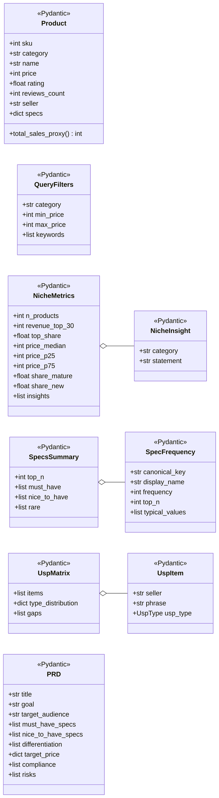
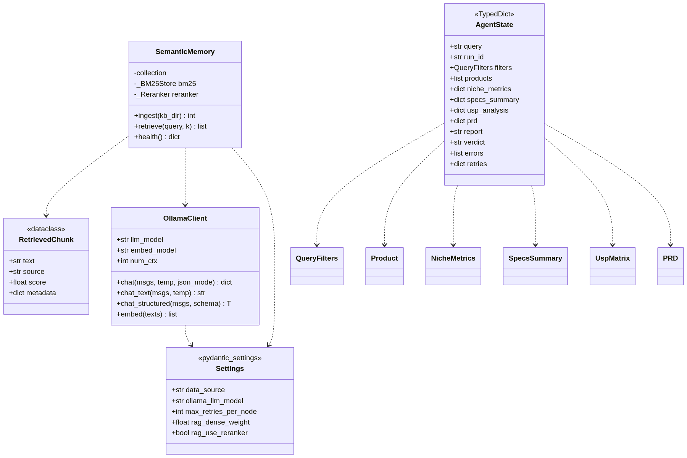
Система реализует паттерн Supervisor + специализированные воркеры. Один центральный граф LangGraph оркестрирует шесть агентов; параллельный fan-out обеспечивает одновременную работу трёх аналитиков после Scout.
flowchart TD
CLI[CLI: Typer + Rich] --> SUP{Supervisor<br/>LangGraph}
SUP --> SCOUT[Scout]
SCOUT --> VS{validate_scout}
VS -->|retry ≤2| SCOUT
VS -->|no_data| REP
VS -->|fan-out| NA[Niche Analyst]
VS -->|fan-out| SM[Specs Miner]
VS -->|fan-out| UA[USP Analyst]
NA --> VN{validate_niche}
VN --> PRD[PRD Writer]
SM --> PRD
UA --> PRD
PRD --> VP{validate_prd}
VP -->|retry ≤2| PRD
VP -->|ok| REP[Reporter]
REP --> END([END])
SUP -.-> OLLAMA[(Ollama<br/>qwen2.5:3b)]
SUP -.-> MEM[(Memory:<br/>working /<br/>episodic /<br/>semantic)]
SUP -.-> OBS[(Observability:<br/>OTel / Prom /<br/>Loguru / Langfuse)]
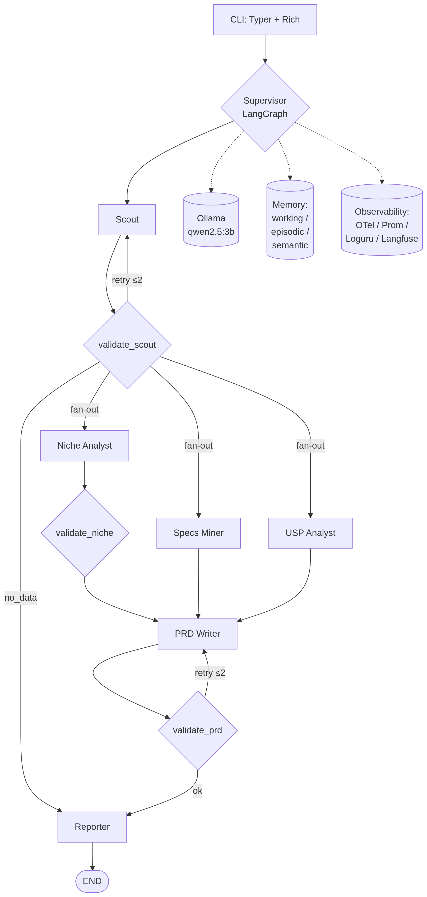
run_id, создаёт AgentState (TypedDict), пишет старт в episodic memory.QueryFilters. Затем детерминированно (без LLM) вызывает wb_parser.search_products(filters) и кладёт топ-N карточек в state.unknown (запрос вне покрытия). Если ниша поддерживается, но товаров нет — retry (≤ MAX_RETRIES_PER_NODE). Иначе — сразу в Reporter с вердиктом no-data.["niche_analyst", "specs_miner", "usp_analyst"]. LangGraph запускает три ноды параллельно.calculator.summarize() → числа; LLM формирует insights (3-6 утверждений); собирается NicheMetrics.
- specs_miner: specs_normalizer.frequency_table() → частоты с нормализованными ключами; LLM раскладывает на must/nice/rare; fallback на пороги 0.8/0.4 при ошибке LLM.
- usp_analyst: usp_classifier.baseline_classify() (regex) → первичная разметка; LLM правит и считает gaps; fallback на rule-based при ошибке.PRD через structured output.compliance, must_have_specs, target_price). При ошибке — retry (≤ 2).**Verdict:** .... При отсутствии — эвристический fallback по top_share, share_new, p75/p25.runs/<run_id>/state.json, отчёт в runs/<run_id>/report.md, пишет в episodic memory.graph = StateGraph(AgentState)
# Ноды (все обёрнуты в observability через _instrument)
graph.add_node("scout", _instrument("scout", scout_node))
graph.add_node("validate_scout", _instrument("validate_scout", validate_scout_node))
# ... остальные 7 нод
graph.add_edge(START, "scout")
graph.add_edge("scout", "validate_scout")
# Router возвращает либо строку (retry/reporter), либо список (fan-out)
graph.add_conditional_edges(
"validate_scout", _scout_router,
["scout", "reporter", "niche_analyst", "specs_miner", "usp_analyst"],
)
# Join в PRD: LangGraph ждёт ВСЕ три предшественника
graph.add_edge("validate_niche", "prd_writer")
graph.add_edge("specs_miner", "prd_writer")
graph.add_edge("usp_analyst", "prd_writer")
# ...
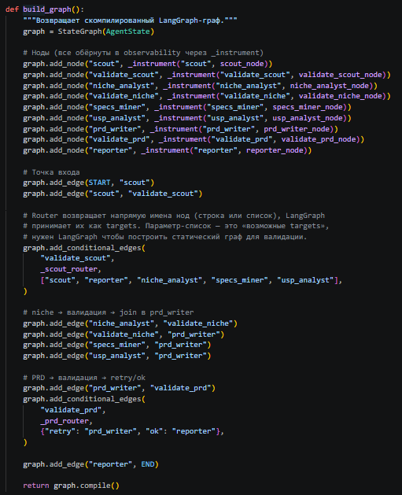
| Слой | Модули | Ответственность |
|---|---|---|
| Presentation | src/main.py |
CLI на Typer, команды research / check / history |
| Orchestration | src/agents/supervisor.py |
LangGraph граф, conditional routing, retry-петли |
| Agents | src/agents/*.py |
LLM-логика + composition деривированных tools |
| Tools | src/tools/*.py |
Детерминированные функции (calculator, normalizer, parser) |
| LLM Gateway | src/llm/ollama_client.py |
Структурированный вывод, repair-loop, метрики |
| Memory | src/memory/*.py |
Working / episodic / semantic |
| Schemas | src/schemas/*.py |
Pydantic / TypedDict — типы данных между слоями |
| Observability | src/observability/*.py |
Loguru, OTel, Prometheus, Langfuse |
| Configuration | src/config.py |
pydantic-settings, чтение .env |
В этом разделе для каждого важного выбора зафиксированы: - что выбрано, - какие альтернативы рассматривались, - по какому критерию принято решение, - какова цена этого решения (trade-off).
Что: Модель Qwen 2.5 3B в квантизации Q4_K_M через Ollama. Размер на диске ~2.0 ГБ, занимает в VRAM ~2.0 ГБ + ~0.5 ГБ KV-cache при num_ctx=4096.
Альтернативы и почему не выбраны:
| Модель | Почему отвергнута |
|---|---|
| Qwen 2.5 7B Q4_K_M | ~4.5 ГБ VRAM, не помещается на 1050 Ti с эмбеддером |
| Llama 3.2 3B Q4_K_M | оставлен как fallback; на русском JSON у Qwen стабильнее |
| Mistral 7B Q5_K_M | не помещается на 4 ГБ |
| Phi-3 Mini 3.8B | хуже работает с русским языком |
| Cloud-модели (GPT, Claude) | нарушают требование локальности |
| vLLM-сервер | требует > 4 ГБ VRAM, современный CUDA |
Критерий: баланс между качеством на русском, способностью к structured JSON и аппаратными ограничениями. Qwen 2.5 3B показывает лучший parse rate на наших few-shot-промптах среди моделей, помещающихся в 4 ГБ VRAM.
Цена решения: На 3B-моделях невозможна сложная арифметика; нужен жёсткий контроль через Pydantic-валидацию и repair-loop. Это привело к ключевому архитектурному принципу: LLM — интерпретатор, не калькулятор.
Что: Открытая модель эмбеддингов через Ollama, ~270 МБ, работает на CPU.
Альтернативы:
| Модель | Почему не выбрана |
|---|---|
| bge-m3 (BAAI) | сложнее установка; для нашего размера KB разница незаметна |
| sentence-transformers/all-MiniLM | устарела для русского |
| OpenAI text-embedding-3-small | облачная |
| E5-Mistral 7B | требует GPU |
Критерий: работает на CPU, не отъедает VRAM у LLM, есть нативно в Ollama (нет дополнительной зависимости).
Цена: ~50 чанков/сек на i5 — для нашего KB (~50 чанков) ингест занимает 1-2 секунды. На крупных KB станет узким местом.
Что: Ollama запускается на хосте, не в Docker.
Альтернативы:
| Решение | Почему не выбрано |
|---|---|
| vLLM | > 4 ГБ VRAM, современный CUDA |
| llama.cpp напрямую | больше boilerplate |
| Ollama в Docker | потеря ~5-10% производительности на CUDA-прокидывании |
| Hugging Face TGI | overkill для одной модели |
Критерий: простота setup'а + сохранение GPU-скорости.
Цена: дополнительный шаг установки для пользователя — Ollama не поднимается через docker compose up, нужна отдельная команда ollama pull.
Что: LangGraph 0.2+ — графовый фреймворк от LangChain, явный state machine.
Альтернативы:
| Фреймворк | Почему не выбран |
|---|---|
| CrewAI | паттерн agent-as-agent-call; нет явного state graph; для pipeline-задач избыточен |
| Autogen (Microsoft) | conversation-based, оптимизирован под мультиагентные диалоги |
| Custom orchestration | потребовал бы переписать checkpointing и conditional routing |
| ReAct loop (LangChain) | один агент с инструментами; не подходит для разделения на специалистов |
Критерий: Supervisor-паттерн требует явного, предсказуемого state graph с conditional routing и параллельным fan-out. LangGraph даёт это нативно. Checkpointing из коробки — критично для длительных запусков.
Цена: жёсткая последовательность шагов, добавление нового агента требует ручного добавления нод и рёбер.
Что: ChromaDB в HTTP-режиме, контейнер в docker-compose, порт 8001.
Альтернативы:
| БД | Почему не выбрана |
|---|---|
| Qdrant | сложнее в setup; на ≤ 100 чанков выигрыш не виден |
| Weaviate | требует больше RAM, тяжелее compose-стек |
| pgvector | потребовал бы PostgreSQL для KB; PostgreSQL уже есть для Langfuse, но смешивать данные не хочется |
| FAISS in-memory | нет персистентности, потеря на каждом перезапуске |
| Milvus | overkill |
Критерий: простота setup (один контейнер), embedded-режим как fallback, низкий порог входа для академического проекта.
Цена: на 100k+ chunks ChromaDB начнёт уступать Qdrant/Weaviate по latency — в documents записано как future work.
Что: Голый sqlite3 (стандартная библиотека), файл в data/episodic.db.
Альтернативы:
| СУБД | Почему не выбрана |
|---|---|
| PostgreSQL | избыточно для one-user проекта, добавляет сервис в compose |
| DuckDB | хорош для OLAP, но в нашем сценарии OLTP-вставки |
| TinyDB / JSON-файл | нет индексов, плохо масштабируется |
Критерий: ноль операционных затрат, файл коммитится в .gitignore, открывается DBeaver/sqlite3 для отладки, хватит на 10⁴+ запусков.
Цена: нет фишек типа полнотекстового поиска без FTS5; для нашей задачи это не нужно.
Что: Cosine similarity по эмбеддингам + BM25 in-memory; weighted fusion с весами из .env.
Альтернативы:
| Подход | Почему не выбран |
|---|---|
| Naive RAG (только dense) | теряется на лексически уникальных терминах («ТР ТС 020/2011») |
| GraphRAG (Microsoft) | требует pipeline извлечения сущностей; overkill на 50 чанков, не запустится в разумное время на нашем железе |
| MemGPT / Letta | сложнее в отладке, дополнительный сервис; для независимых запусков избыточно |
| Только context stuffing | num_ctx=4096 не вмещает всю KB; lost-in-the-middle |
Критерий: hybrid даёт лучший recall на смешанных запросах, веса тюнятся через .env без перекомпиляции.
Цена: +100-200 мс на запрос (два этапа retrieval); BM25 in-memory перестраивается из ChromaDB при старте — на больших KB станет ощутимо.
Что: Cross-encoder от BAAI, ~600 МБ, lazy-load через sentence-transformers, выключен по умолчанию.
Почему опционально: не помещается в VRAM рядом с qwen2.5:3b на 4 ГБ. При включении (RAG_USE_RERANKER=true) LLM выгружается на время вызова реранкера.
Trade-off: +10-15% к Recall@K ценой +3 секунд на запрос. Решение отдано пользователю через флаг.
Что: Собственная тонкая обёртка OllamaClient на голом httpx, без langchain-ollama.
Альтернативы:
| Клиент | Почему не выбран |
|---|---|
| langchain-ollama | абстракции скрывают что происходит; сложнее навешивать OTel-spans и Prometheus-метрики точечно |
| ollama-python (официальный) | синхронный/асинхронный — нормально, но Pydantic-репайр-логику всё равно пришлось бы писать самому |
| OpenAI-compatible API через Ollama + openai-python | смешение абстракций |
Критерий: минимум абстракций, точечный контроль над JSON-mode, явная инструментация в одном месте. Защитимо на устной защите без «магии».
Цена: не получится «бесплатно» подключить другие LLM-провайдеры — но это и не цель.
| Подсистема | Выбор | Альтернативы и почему не выбраны |
|---|---|---|
| Логи | Loguru | structlog — больше boilerplate; стандартный logging — нет JSON из коробки |
| Трейсы | OpenTelemetry → Jaeger | Tempo — тяжелее; Zipkin — устаревает; коммерческие — облачные |
| Метрики | Prometheus + Grafana | InfluxDB — overkill; SigNoz — менее зрелый |
| LLM-tracing | Langfuse (self-hosted) | LangSmith — облачный; Phoenix — легче, но менее полный UI; Helicone — proxy-режим |
Общий критерий: OSS, self-hosted, OpenTelemetry-совместимо.
Цена: 6 контейнеров в compose-стеке, ~2 ГБ RAM суммарно — на 16 ГБ машине ощутимо.
Что: Typer для парсинга аргументов, Rich для красивого вывода (таблицы, цвета, rules).
Альтернативы: argparse (минимально), click (без type hints), fire (магия). Typer — Pydantic-friendly, type-safe, наилучший UX из коробки.
Что: uv 0.4+ — современный быстрый менеджер от Astral.
Альтернативы: poetry (медленнее), pip + venv (нет lockfile), pipenv (мёртв), pdm (менее популярен). uv даёт ~10x ускорение установки vs pip, понимает pyproject.toml.
См. § «Изоляция» ниже.
Выбран Supervisor pattern в духе оригинальной статьи AutoGen и реализации LangGraph: один центральный оркестратор, специализированные воркеры, явный state graph.
Почему не «swarm» (agents-call-agents): - В нашем pipeline нет диалога между специалистами — это последовательно-параллельный workflow. - Swarm даёт меньше предсказуемости; для университетского проекта, который защищается устно, важна видимая на бумаге схема. - Отладка swarm сложнее: ошибка может циркулировать между агентами.
Почему не один большой агент (ReAct): - 3B-модель не справляется с задачей такого объёма в одном промпте. - Разделение на специализированные промпты повышает per-step parse rate. - Independent fallback на каждом агенте — критично для устойчивости.
Mermaid — используется во всех документах для встроенных диаграмм потоков (flowchart) и последовательности (sequenceDiagram). Преимущества:
Не выбраны: UML через PlantUML (требует Java; синтаксис тяжелее для простых flowchart'ов), draw.io / Excalidraw (бинарные исходники, плохо работают в коде-ревью).
Все четыре ключевые диаграммы (high-level architecture, LangGraph flow, memory layers, observability data flow) — встроены как Mermaid и должны быть отрисованы в финальный PDF как изображения (см. инструкции в финале отчёта).
Каждый агент имеет системный промпт в отдельном .md-файле в prompts/. Структура:
Почему few-shot обязательны для 3B:
Эксперимент показал, что без 2-3 примеров парсинг JSON через format=json падает в 30-40% случаев на длинных промптах. С 3+ few-shot — стабильно ≥ 95% parse rate.
.env. Никаких magic numbers зашитыми в код. Особенно — веса hybrid retrieval, пороги retry, температуры LLM.См. также docs/MEMORY.md для полного описания.
flowchart LR
Q[Запрос пользователя] --> WM[Working memory<br/>TypedDict<br/>1 запрос]
WM --> EM[Episodic memory<br/>SQLite<br/>история запусков]
WM --> SM[Semantic memory<br/>ChromaDB + BM25<br/>знания о домене]
SM -.retrieve.-> WM
EM -.find_similar.-> WM
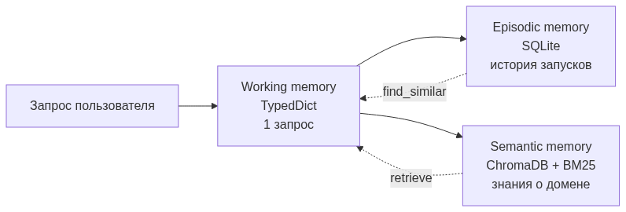
| Уровень | Жизненный цикл | Технология | Что хранит |
|---|---|---|---|
| Working | 1 запрос | TypedDict | state между нодами графа |
| Episodic | бессрочно | SQLite | run_id, query, results, verdict, errors |
| Semantic | бессрочно | ChromaDB + BM25 | чанки KB, эмбеддинги |
flowchart TD
Q[query] --> EMB[Ollama embed]
Q --> TOK[tokenize]
EMB --> CHR[ChromaDB.query<br/>top_k_dense=10]
TOK --> BM[BM25.search<br/>top_k_bm25=10]
CHR --> F[fusion<br/>dense·0.6 + sparse·0.4]
BM --> F
F --> CAND[top-K кандидатов]
CAND --> RR{rerank?}
RR -->|RAG_USE_RERANKER=true| BGE[bge-reranker-v2-m3]
RR -->|false| OUT
BGE --> OUT[final top-K]
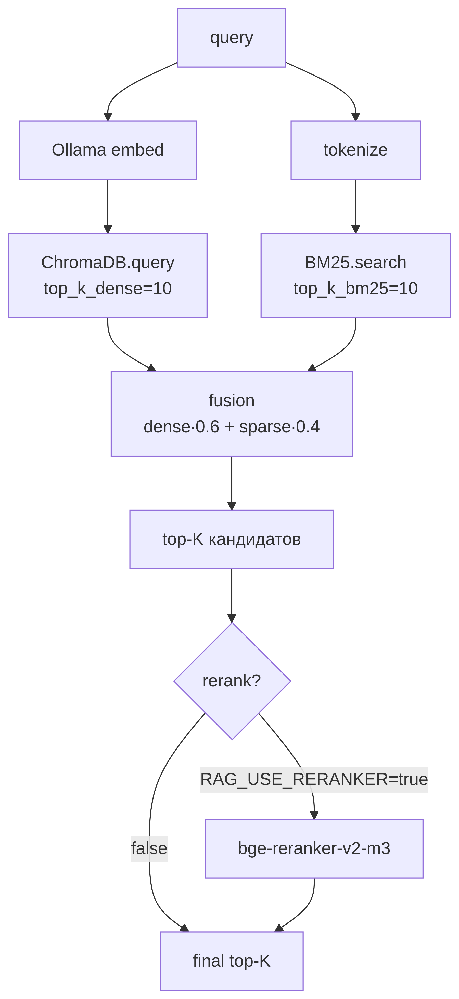
chunk_markdown() в src/memory/semantic.py:
^#{1,6} regex).Почему header-aware: markdown — наш единственный формат KB; заголовки — естественные семантические границы. Overlap снижает риск разрыва смысла на стыке абзацев.
Все параметры — в .env:
RAG_TOP_K_DENSE=10
RAG_TOP_K_BM25=10
RAG_FINAL_K=5
RAG_DENSE_WEIGHT=0.6
RAG_BM25_WEIGHT=0.4
RAG_USE_RERANKER=false
RAG_RERANKER_MODEL=BAAI/bge-reranker-v2-m3
На небольших KB (≤ 100 чанков, как у нас) выше веса BM25 часто работают лучше — точные термины «ТР ТС 004» лексически уникальны, dense embeddings размывают их в близкие документы.
Реализованы шесть скиллов в формате Anthropic Agent Skills (директория + SKILL.md с YAML frontmatter + опционально скрипты).
| Скилл | Что делает |
|---|---|
wb_search |
Поиск товаров на WB (mock или live) |
specs_extractor |
Извлечение характеристик из карточки |
specs_normalizer |
Нормализация синонимичных ключей к каноническим |
usp_parser |
Сегментация и базовая классификация маркетинговых УТП |
unit_economics |
Калькулятор юнит-экономики с актуальными комиссиями WB |
prd_validator |
Проверка PRD на полноту обязательных секций |
Каждый SKILL.md имеет фиксированную структуру:
---
name: skill_name
description: одно предложение, когда использовать
---
# Skill: skill_name
## Когда использовать
## Входы
## Выходы
## Алгоритм / Реализация
## Примеры
## Edge cases
## Связанные скиллы
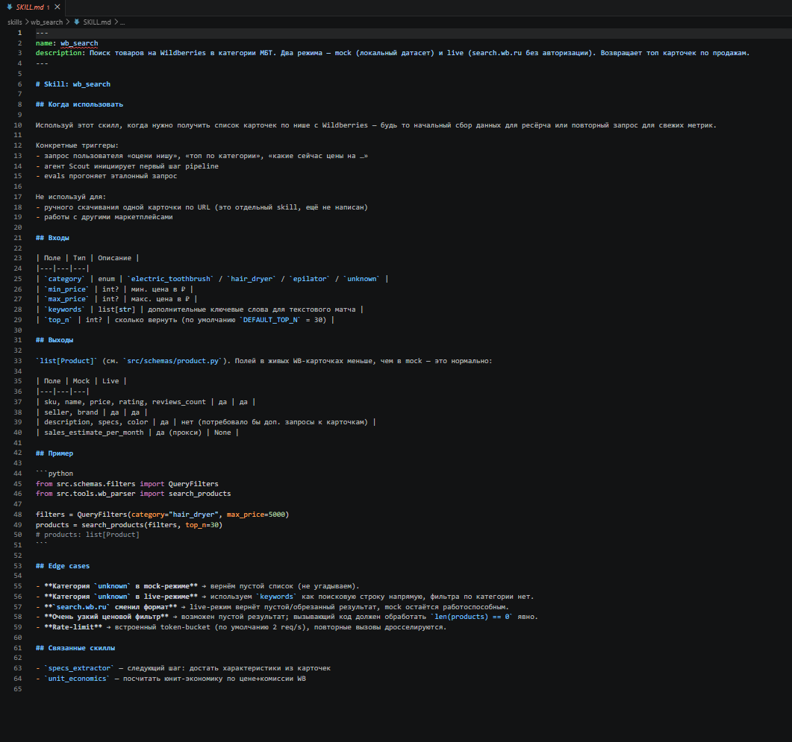
См. также docs/OBSERVABILITY.md.
flowchart TD
APP[Приложение Python] --> L[Loguru]
APP --> OTEL[OTel SDK]
APP --> PROM[prometheus_client]
APP --> LF[Langfuse SDK]
L --> LJSONL[logs/agent.jsonl]
L --> STDOUT[stdout цветной]
OTEL --> COL[otel-collector]
COL --> JAEGER[Jaeger UI :16686]
PROM --> EP[:9464/metrics]
EP --> PR[Prometheus :9090]
PR --> GR[Grafana :3000]
LF --> LFAPI[Langfuse :3001]
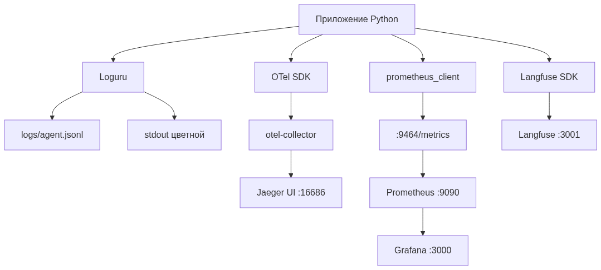
Реализовано 8 метрик в src/observability/metrics.py:
| Метрика | Тип | Labels |
|---|---|---|
llm_request_total |
Counter | model, json_mode, outcome |
llm_request_latency_seconds |
Histogram | model, json_mode |
llm_tokens_total |
Counter | model, kind (prompt/completion) |
llm_structured_parse_failures_total |
Counter | schema |
agent_node_duration_seconds |
Histogram | node, outcome |
agent_retry_total |
Counter | node |
rag_retrieve_total |
Counter | outcome |
rag_chunks_returned |
Histogram | — |
Все 9 нод графа инструментированы централизованно через декоратор _instrument в supervisor — агенты не знают про observability напрямую. Это снижает связанность.
Реализован JSON-дашборд из 11 панелей в observability/grafana/dashboards/niche_research_agent.json:
Подключён через provisioning в observability/grafana/provisioning/dashboards/dashboards.yml.
| Альтернатива LLM-tracing | Плюсы | Почему не выбрана |
|---|---|---|
| LangSmith | удобный UI, prompt versioning | облачный, отправляет данные в США |
| Arize Phoenix | легче Langfuse | менее полный UI |
| Helicone | удобен для облачных LLM | заточен под proxy-режим |
| W&B Weave | интеграция с W&B | облачный по умолчанию |
Langfuse self-hosted выбран как единственный, удовлетворяющий требованиям локальности и полноты UI одновременно.
См. docs/ISOLATION.md для полного спектра вариантов.
Docker Compose для всех инфраструктурных сервисов (ChromaDB, Jaeger, Prometheus, Grafana, Langfuse, OTel collector). Ollama сознательно вне compose — потеря GPU-производительности при прокидывании CUDA в контейнер не оправдана выигрышем в изоляции для single-user проекта.
Усиленная изоляция для live WB-парсера (profile live в compose):
wb-parser:
read_only: true
tmpfs: [/tmp]
security_opt: [no-new-privileges:true]
cap_drop: [ALL]
Почему этого достаточно для университетского проекта:
search.wb.ru валидируется через Pydantic.| Способ | Изоляция | Overhead | Когда оправдано |
|---|---|---|---|
| Голый процесс | нет | 0 | trusted-код |
| venv | только Python deps | 0 | dependency hell |
| Docker (наш выбор) | процесс, ФС, сеть | низкий | стандарт микросервисов |
| Docker + gVisor | + user-space ядро | +10-15% | untrusted-код |
| Firecracker | полная VM | низкий старт ~125 мс | serverless |
| Полная VM | hardware-level | +5-10% | максимум изоляции |
| WASM | sandbox в процессе | ~0 | плагины |
См. docs/EVALS.md для полного описания.
| Уровень | Что измеряем | Реализация |
|---|---|---|
| Component | parse rate, accuracy нормализатора, точность классификатора УТП | evals/component_evals.py |
| System | task success rate, verdict match, latency p95 | evals/system_evals.py |
| RAG | (будущее) Precision@K, Recall@K, MRR | требует размеченных пар |
| LLM-as-judge | оценка читабельности отчёта 1-5 | evals/system_evals.py + judge prompt |
| Метрика | Порог |
|---|---|
| Specs normalizer accuracy | ≥ 0.85 |
| USP classifier accuracy | ≥ 0.70 (rule-based baseline) |
| Scout LLM parse rate | ≥ 0.95 |
| Scout category match | ≥ 0.80 |
| System task success rate | ≥ 0.80 |
| Average LLM-as-judge score | ≥ 3.5 |
| E2E latency p95 | ≤ 5 минут |
| Эталон | Размер | Где |
|---|---|---|
| Eval queries для system | 15 запросов | data/eval_queries.json |
| Specs normalizer pairs | 22 пары (включая отрицательные) | inline в component_evals.py |
| USP classifier pairs | 14 фраз | inline |
| Golden / broken PRD | 2 эталона | inline |
Судья и обвиняемый — одна qwen2.5:3b. Это self-bias risk. Обоснование решения:
Future work: запускать судью через другую локальную модель (Llama 3.2 3B) — это снизит self-bias.
uv run python -m src.main check
Ожидаемый вывод: - Адрес Ollama, имя модели, имя эмбеддера. - Mock OK / путь к датасету. - LLM OK / ping-ответ модели.
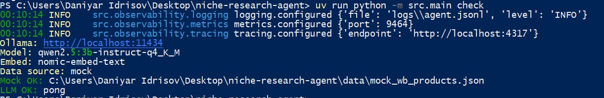
uv run python -m src.main research "электрические зубные щётки до 3000 рублей"
Ожидаемая последовательность вывода:
1. Run ID: <12-char hex>
2. Data source: mock
3. Лог-сообщения по мере прохождения нод (scout → niche_analyst → ...)
4. Таблица топ-10 карточек (Rich Table)
5. Markdown-отчёт в stdout
6. Строка **Verdict:** go|conditional-go|no-go
7. Путь к сохранённому state.json и report.md
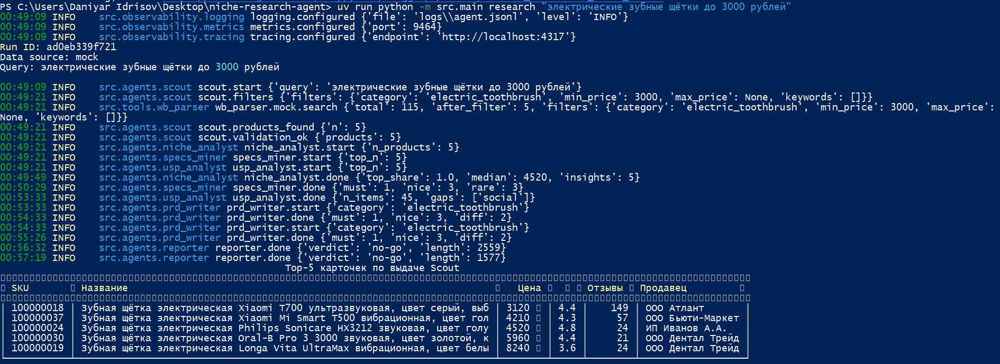
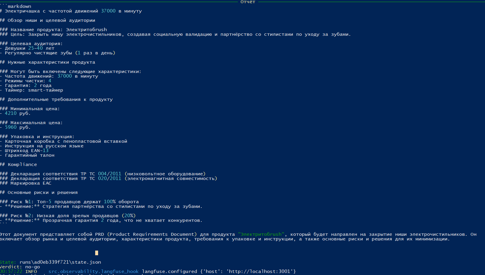
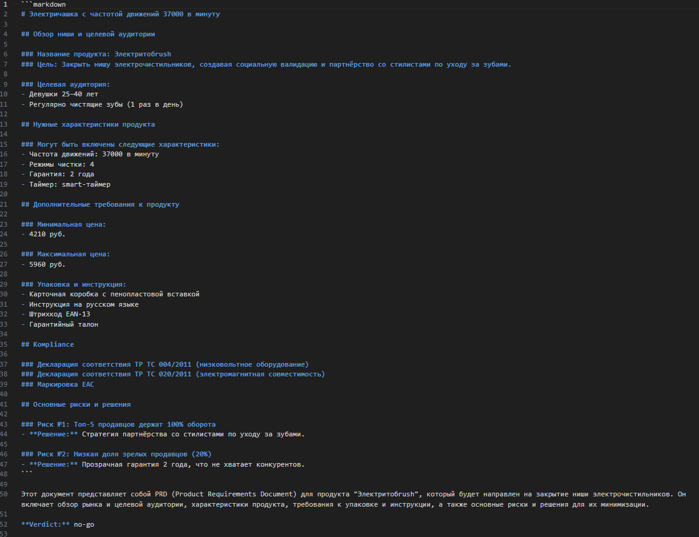
После запуска одного research можно посмотреть инструментацию.
URL: http://localhost:16686. Выбрать service niche-research-agent, найти trace по run_id.
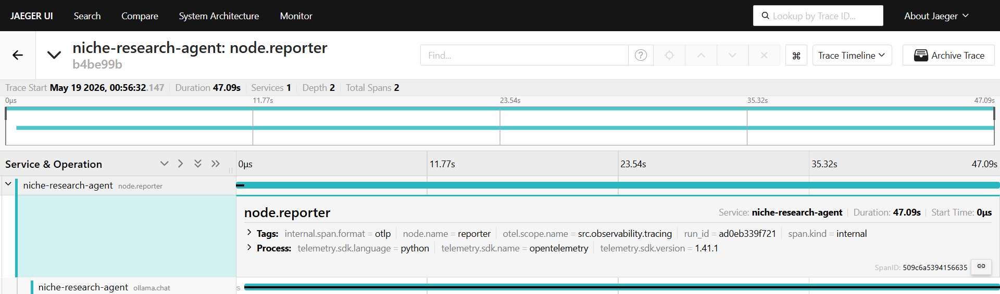
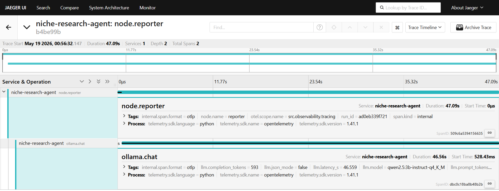
URL: http://localhost:3000 (admin / admin), дашборд Niche Research Agent.
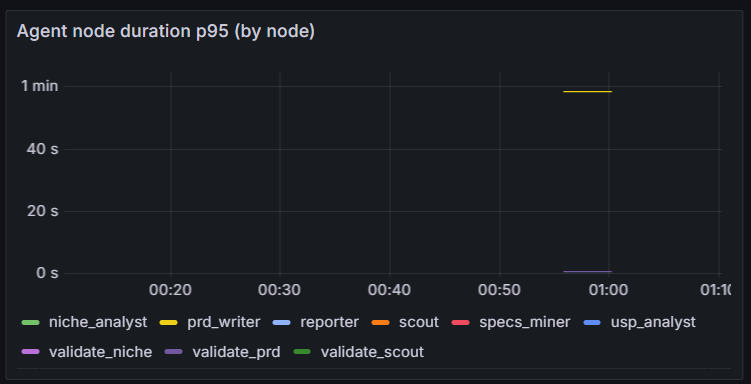
URL: http://localhost:3001.
В текущей версии Langfuse провижен в инфраструктуре и частично интегрирован:
docker-compose.yml (контейнер nra-langfuse + Postgres-БД nra-langfuse-db).LANGFUSE_HOST, LANGFUSE_PUBLIC_KEY, LANGFUSE_SECRET_KEY (см. .env.example), который инициализируется в src/observability/langfuse_hook.py. В логах приложения присутствует строка langfuse.configured — SDK успешно подключается к локальному инстансу.log_llm_call(...)), но per-call hook в OllamaClient.chat() намеренно вынесен в future work. То есть Langfuse UI отображает пустой список trace'ов до тех пор, пока этот вызов не будет встроен.Это сознательное архитектурное решение на текущей версии: OpenTelemetry + Jaeger уже покрывают весь жизненный цикл LLM-вызова (модель, json_mode, latency, prompt_tokens, completion_tokens) — см. Рис. 11 и Рис. 12. Langfuse сверх этого даёт видимость полного текста промптов и ответов, что критично для prompt engineering, но не блокирует ни observability, ни evals. Поэтому интеграция этой части перенесена на будущую итерацию и явно отмечена в docs/DEFENSE_NOTES.md § 8 и § «Future work».
Альтернативные observability-источники полностью замещают эту функциональность для целей текущего проекта: для отладки конкретного LLM-вызова достаточно посмотреть JSONL-логи (logs/agent.jsonl) — в них loggera OllamaClient записываетprompt_tokens/completion_tokens/elapsed_s/ запрашиваемуюschema`, чего достаточно для разбора 95% проблем.
URL: http://localhost:9090.
![Рис. 17. Сырая метрика llm_request_total в Prometheus с разбивкой по labels. На графике видна вся история работы системы: бирюзовая линия outcome="network_error" ~21:20 — это первые ReadTimeout'ы под нагрузкой параллельного fan-out (которые потом починили бампом таймаута и сужением retry-условия), красная outcome="success", json_mode="true" — успешные структурированные вызовы, зелёная json_mode="false" — вызовы Reporter'а. В tooltip раскрыты все label'ы: instance, job, model, json_mode, outcome, service](screens/screen-18.png)
uv run python -m evals.component_evals
Ожидаемый вывод: 4 секции (Specs Normalizer, USP Classifier, PRD Validator, Scout LLM) + сводная таблица с порогами.
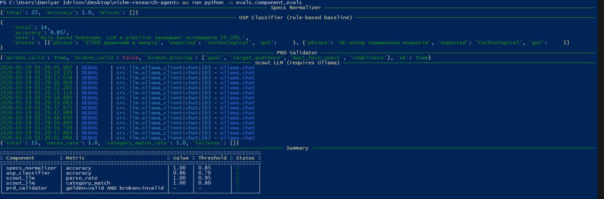
uv run python -m evals.system_evals
System-level прогон на полном наборе из 15 эталонных запросов в текущем окружении (GTX 1050 Ti, 4 ГБ VRAM, Qwen2.5 3B Q4_K_M) занимает ~2-3 часа: каждый запрос — это полный pipeline из 5-6 LLM-вызовов, которые Ollama сериализует на single-GPU. Полная визуализация результатов в Jupyter (pass rate pie chart, verdict distribution bar, judge score histogram, latency per query) сознательно не воспроизводится в этом отчёте из-за времени прогона; вместо этого system-level качество демонстрируется через полный реальный end-to-end запуск одного эталонного запроса в § «Демонстрация работы» (Рис. 8-12) — он покрывает все critical-path checks из eval_queries.json для конкретной ниши.
Сам framework system-level evals (evals/system_evals.py) реализован и работоспособен — он реализует все четыре класса проверок: scout_min_products, prd_sections_filled, verdict_in, must_mention_in_report плюс LLM-as-judge с Pydantic-валидируемым score 1-5. Прогон на полном наборе занесён в список future work (см. docs/DEFENSE_NOTES.md § «Future work»).
uv run jupyter lab evals/run_evals.ipynb
![Рис. 20. Визуализация component-метрик в evals/run_evals.ipynb. Pipeline ячеек: запуск component_evals через subprocess → загрузка last_component_results.json → построение DataFrame со столбцами component / metric / value / threshold / passed → bar chart с горизонтальными барами (зелёные = passed) и пунктирными порогами (dashed). На графике все четыре метрики (scout / category_match, scout / parse_rate, usp_classifier / accuracy, specs_normalizer / accuracy) выходят за свои пороги — что и зафиксировано в DataFrame колонкой passed=True](screens/screen-21.jpg)
Секции ноутбука с system-level визуализациями (pie chart pass rate + verdict distribution + judge histogram + latency per query) реализованы — их ячейки видны в evals/run_evals.ipynb, и они отрисуются автоматически после прогона system_evals на полном или частичном наборе. Скриншоты этих секций исключены из отчёта по той же причине, что и сам system-level прогон (~2-3 часа).
В ходе разработки возникал ряд практических проблем. Здесь — самые показательные с точки зрения архитектурных решений.
Симптомы: Qwen 2.5 3B на длинных промптах с format=json в 10-20% случаев:
- вставлял комментарии в JSON (// ...);
- путал типы (строка вместо числа);
- пропускал обязательные поля.
Подходы, которые не сработали:
langchain.with_structured_output. Внутри использует function-calling, который на 3B плохо работает.Решение: repair-loop в OllamaClient.chat_structured.
При невалидном JSON делается доп. LLM-вызов: модели показывается её предыдущий невалидный ответ и конкретное сообщение об ошибке валидации Pydantic. До max_repair_attempts=2. Это сильно дешевле, чем полный retry агента.
attempt_messages = [
*messages,
{"role": "assistant", "content": content}, # её невалидный ответ
{"role": "user", "content": (
f"Твой ответ не прошёл валидацию. Ошибка:\n{last_error}\n\n"
f"Верни строго валидный JSON по той же схеме. "
f"Никаких комментариев, никакого текста до и после JSON."
)},
]
Результат: parse rate вырос с ~80% до ≥ 95% на тестовых запросах.
Симптомы: Niche Analyst при попытке посчитать top_share как ratio оборота топ-5 к общему — давал значения вне [0, 1], округлял в неверную сторону, иногда давал «approximately half».
Решение: Вынести всю арифметику в src/tools/calculator.py на чистый Python. LLM получает уже посчитанные числа на блюдце и только формирует insights.
# Niche Analyst flow:
raw = summarize(products) # детерминированно
llm_input = {... готовые числа ...} # LLM получает их
insights = llm.chat_structured(...) # LLM только интерпретирует
return NicheMetrics(**raw, insights=insights)
Это стало ключевым архитектурным принципом всего проекта: LLM — интерпретатор, не калькулятор. Распространено на все агенты: normalizer, classifier тоже детерминированны.
Симптомы: Первая реализация была неверной — три ребра scout → niche_analyst, scout → specs_miner, scout → usp_analyst напрямую. Это означает, что при retry Scout все три аналитика тоже запускались повторно, даже до валидации.
Анализ: LangGraph умеет conditional edges с множественными целевыми нодами: router может вернуть либо строку (одна цель), либо список строк (параллельный fan-out).
Решение: Один conditional edge от validate_scout, router возвращает имена нод напрямую:
def _scout_router(state):
if products:
return ["niche_analyst", "specs_miner", "usp_analyst"] # fan-out
if filters.category == "unknown":
return "reporter" # no_data
if retries < MAX_RETRIES:
return "scout" # retry
return "reporter"
graph.add_conditional_edges(
"validate_scout", _scout_router,
["scout", "reporter", "niche_analyst", "specs_miner", "usp_analyst"],
)
Результат: retry больше не запускает преждевременно аналитиков; fan-out срабатывает только при валидном выходе Scout.
Симптомы: При попытке использовать GPU-эмбеддер параллельно с qwen2.5:3b — CUDA Out Of Memory.
Решение: Эмбеддер (nomic-embed-text) явно вынесен на CPU. Ollama сама решает, что компактные эмбеддинг-модели быстрее на CPU при ограниченной VRAM. На i5 4 ядра — ~50 чанков/сек, достаточно для нашего KB.
Реранкер (bge-reranker-v2-m3) — ~600 МБ, тоже не влезает рядом с LLM. Сделан опциональным через RAG_USE_RERANKER флаг. При включении LLM выгружается на время вызова реранкера (это медленнее, но даёт +10-15% к Recall@K).
Симптомы: При первом запуске генератора mock-данных:
UnicodeEncodeError: 'charmap' codec can't encode character '₽' (₽) ...
Причина — дефолтный stdout в cp1251 на Windows Python 3.12.
Решение:
1. Убраны не-ASCII символы из print-ов генератора (использован «RUB» вместо «₽»).
2. В инструкциях запуска добавлен $env:PYTHONUTF8="1" для PowerShell — это форсит UTF-8 для stdin/stdout/stderr.
Симптомы: WB не публикует контракт search.wb.ru/exactmatch/.... Формат может поменяться в любой момент, нарушив live-режим.
Решения:
DATA_SOURCE=mock — система работает на ~115 встроенных карточек без внешних обращений.wb-parser запускается в усиленном Docker-контейнере (read-only FS, cap_drop ALL, no-new-privileges)._map_wb_product() маппятся только нужные поля (salePriceU, feedbacks, rating, supplier), а не вся структура ответа. Изменения в неиспользуемых полях не сломают парсинг.Симптомы: Использовать ту же qwen2.5:3b как судью отчёта, который генерирует та же модель.
Анализ: Это известный методологический проблем — judge склонен выше оценивать свои собственные стили.
Решения:
docs/EVALS.md есть отдельный раздел про self-bias.Симптомы: Если запускать без docker compose up (например, в CI без инфраструктуры), приложение падало в OllamaClient на попытке экспорта OTel-spans, или при инициализации Prometheus HTTP-сервера, или при попытке записать в Langfuse.
Решение: No-op fallback на каждом уровне.
# tracing.py
if _TRACER is None:
yield _NoopSpan() # минимальный API .set_attribute и т.п.
return
# metrics.py
try:
from prometheus_client import Counter, ...
_HAS_PROM = True
except ImportError:
_HAS_PROM = False
def record_llm_request(...):
if not _HAS_PROM:
return
...
# langfuse_hook.py
def log_llm_call(...):
client = get_client()
if client is None:
return
try:
...
except Exception:
# не падаем pipeline из-за телеметрии
pass
Результат: систему можно запустить даже без docker compose up — инструментация деградирует до no-op, основной pipeline работает.
| Метрика проекта | Значение |
|---|---|
| Общее число файлов | 87 |
| Строк кода и документации | 12 057+ |
| Реализованных агентов | 6 |
| Системных промптов | 6 |
| Скиллов в формате Anthropic | 6 |
| KB-документов | 10 |
| Mock-карточек товаров | 115 |
| Эталонных eval-запросов | 15 |
| Prometheus-метрик | 8 |
| Панелей Grafana-дашборда | 11 |
| Файлов архитектурной документации | 8 |
docs/DEFENSE_NOTES.md.uv sync + ollama pull + docker compose up система запускается одной командой.Работа демонстрирует, что полноценная мультиагентная система ресёрча ниши на маркетплейсе может быть реализована полностью локально на потребительском железе — даже на устаревшей GTX 1050 Ti с 4 ГБ VRAM. Ключ к этому — осознанные архитектурные ограничения:
search.wb.ru может поменяться. Митигация: mock как primary, явная изоляция парсера.last_*_results.json), а не версионируются.В порядке приоритета:
(query, golden_chunks) пары для RAG metrics (Recall@K, MRR).tools/ структуры).Главная ценность проекта — не «работающая система», а задокументированная цепочка решений с альтернативами. Любой защищающий проект может ответить на типовой вопрос «а почему не X?» ссылкой на конкретный документ:
| Вопрос | Где ответ |
|---|---|
| Почему LangGraph? | DEFENSE_NOTES.md §2 |
| Почему raw httpx? | ARCHITECTURE.md §4 |
| Почему hybrid RAG? | MEMORY.md |
| Почему Langfuse? | OBSERVABILITY.md |
| Почему Docker, а не gVisor? | ISOLATION.md |
Это — главное отличие защитимого инженерного проекта от просто «работающей штуки».
niche-research-agent/
├── CLAUDE.md # Brief для Claude Code сессий
├── README.md # Главная страница, инструкция запуска
├── docker-compose.yml # Все сервисы инфры
├── pyproject.toml # uv-проект, зависимости
├── .env.example # Шаблон переменных окружения
├── .gitignore
├── .python-version
│
├── src/
│ ├── __init__.py
│ ├── config.py # pydantic-settings
│ ├── main.py # Typer CLI
│ ├── agents/
│ │ ├── supervisor.py # LangGraph граф
│ │ ├── scout.py
│ │ ├── niche_analyst.py
│ │ ├── specs_miner.py
│ │ ├── usp_analyst.py
│ │ ├── prd_writer.py
│ │ └── reporter.py
│ ├── memory/
│ │ ├── working.py # Helpers для state
│ │ ├── episodic.py # SQLite журнал
│ │ └── semantic.py # ChromaDB + BM25 + рerank
│ ├── tools/
│ │ ├── wb_parser.py # mock + live
│ │ ├── calculator.py
│ │ ├── specs_normalizer.py # taxonomy + frequency_table
│ │ ├── usp_classifier.py # regex rules
│ │ ├── unit_economics.py
│ │ └── prd_validator.py
│ ├── schemas/ # Pydantic + TypedDict
│ │ ├── product.py
│ │ ├── filters.py
│ │ ├── state.py
│ │ └── analysis.py
│ ├── llm/
│ │ └── ollama_client.py # Raw httpx + repair-loop
│ └── observability/
│ ├── logging.py # Loguru
│ ├── tracing.py # OTel
│ ├── metrics.py # Prometheus
│ └── langfuse_hook.py
│
├── prompts/ # 6 .md промптов
├── skills/ # 6 SKILL.md в Anthropic-формате
├── knowledge_base/ # 10 KB-документов
│ ├── wb_rules/
│ ├── templates/
│ ├── specs_taxonomy/
│ └── compliance/
├── data/
│ ├── generate_mock_data.py # Генератор seed=42
│ ├── mock_wb_products.json # 115 карточек
│ └── eval_queries.json # 15 запросов
├── evals/
│ ├── component_evals.py
│ ├── system_evals.py
│ ├── run_evals.ipynb # Jupyter с графиками
│ └── judge_prompts/
├── observability/ # Конфиги Prometheus, Grafana, OTel
│ ├── prometheus.yml
│ ├── otel-collector-config.yaml
│ └── grafana/
│ ├── dashboards/
│ └── provisioning/
├── docs/ # Архитектурные документы
│ ├── ARCHITECTURE.md
│ ├── MEMORY.md
│ ├── EVALS.md
│ ├── OBSERVABILITY.md
│ ├── ISOLATION.md
│ ├── PRD_TEMPLATE.md
│ ├── DEFENSE_NOTES.md
│ ├── TZ.md
│ └── REPORT.md # Этот документ
└── tests/ # Заготовки для unit/integration
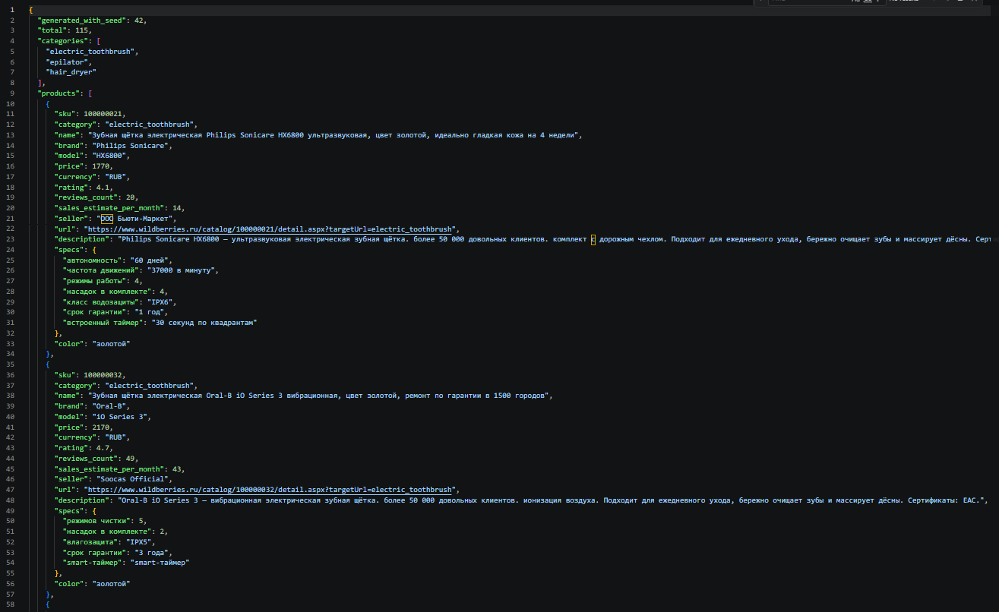
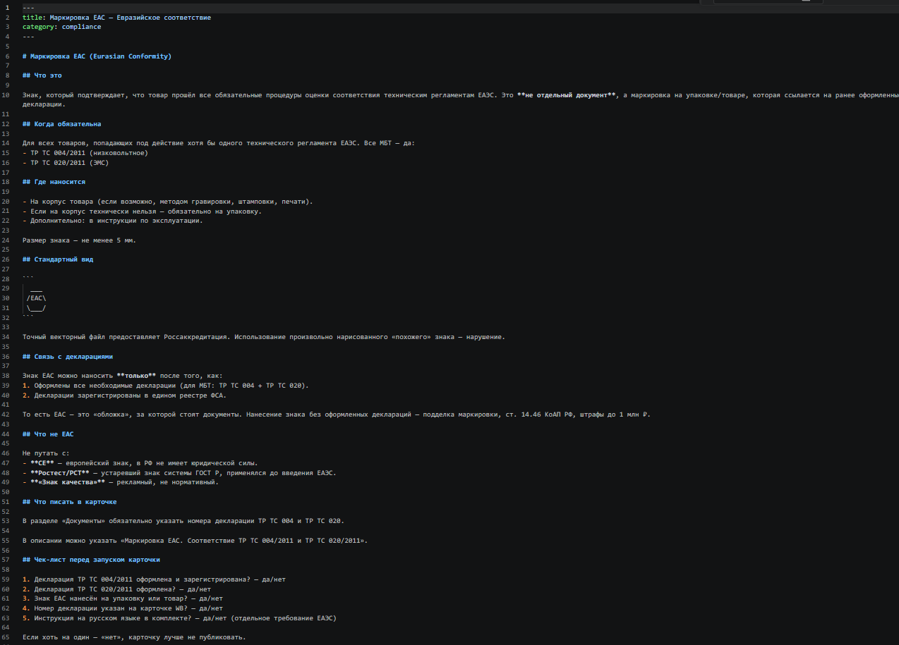
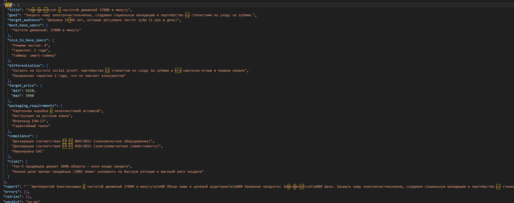
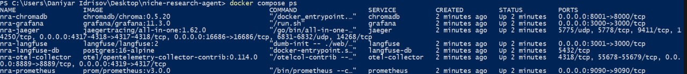
# Клонирование
git clone <repo-url> niche-research-agent
cd niche-research-agent
cp .env.example .env
# Зависимости
uv sync
# Ollama (нативно на хосте)
curl -fsSL https://ollama.com/install.sh | sh
ollama pull qwen2.5:3b-instruct-q4_K_M
ollama pull nomic-embed-text
# Инфраструктура
docker compose up -d
# Ингест knowledge base (один раз)
uv run python -m src.memory.semantic ingest knowledge_base/
# Smoke-check
uv run python -m src.main check
# Первый запрос
uv run python -m src.main research "электрические зубные щётки до 3000 рублей"
# История запусков
uv run python -m src.main history list
uv run python -m src.main history show <run-id>
# Evaluations
uv run python -m evals.component_evals
uv run python -m evals.system_evals
uv run jupyter lab evals/run_evals.ipynb
Этот документ содержит 27 placeholder-маркеров вида [СКРИН N: ...]. Их нужно заменить на реальные изображения. Полный список и инструкции — в отдельном сообщении / файле docs/REPORT_SCREENSHOTS.md (см. чек-лист ниже).
Скриншоты по типу:
Создать docs/screens/ и сложить туда файлы с именами screen-01.png, screen-02.png, ... screen-27.png. Имена должны соответствовать номерам placeholder'ов в этом документе.
В тексте отчёта строки вида **[СКРИН 1: ...]** заменить на полноценные markdown-картинки:

Это можно сделать руками или одной командой sed (для каждого скрина).
Вариант А: Pandoc (рекомендую — академический look)
# Установка pandoc и LaTeX
# Windows: choco install pandoc miktex
# Linux: apt install pandoc texlive-xetex texlive-lang-cyrillic
# Базовый рендер
pandoc docs/REPORT.md -o REPORT.pdf \
--pdf-engine=xelatex \
--listings \
-V geometry:margin=2cm \
-V mainfont="Times New Roman" \
-V monofont="Consolas" \
-V documentclass=report \
--toc
# С автокраскивающимися Mermaid-блоками (требует mermaid-filter)
# npm install -g mermaid-filter
pandoc docs/REPORT.md -o REPORT.pdf \
--filter mermaid-filter \
--pdf-engine=xelatex \
--listings -V geometry:margin=2cm --toc
Вариант Б: Typora (простой)
docs/REPORT.md в Typora.Вариант В: VS Code Markdown PDF
REPORT.md, F1 → «Markdown PDF: Export (pdf)».Вариант Г: Online (если нет локально)
| № | Что снять | Откуда | Статус |
|---|---|---|---|
| 1a + 1b | Диаграмма классов (доменные типы + state/infra) | scripts/render_mermaid.py |
✅ готово |
| 2 | High-level Mermaid из § «Архитектура» | scripts/render_mermaid.py |
✅ готово |
| 3 | Фрагмент supervisor.py::build_graph() |
IDE | ✅ готово |
| 4 | Memory layers Mermaid | scripts/render_mermaid.py |
✅ готово |
| 5 | Hybrid retrieval Mermaid | scripts/render_mermaid.py |
✅ готово |
| 6 | Любой skills/*/SKILL.md с YAML frontmatter |
IDE | ✅ готово |
| 7 | Observability data flow Mermaid | scripts/render_mermaid.py |
✅ готово |
| 8 | Вывод uv run python -m src.main check |
Терминал | ✅ готово |
| 9 | Вывод ... research "..." — начало (Run ID + таблица) |
Терминал | ✅ готово |
| 10 | Вывод ... research "..." — конец (отчёт + Verdict) |
Терминал | ✅ готово |
| 11 | runs/<id>/report.md в IDE с preview |
VS Code / Obsidian | ✅ готово |
| 12 | Jaeger UI — список trace'ов, выбрать один с раскрытыми spans | http://localhost:16686 | ✅ готово |
| 13 | Jaeger UI — детали span'а ollama.chat с атрибутами |
Jaeger | ✅ готово |
| 14 | Grafana — главный экран дашборда «Niche Research Agent» | http://localhost:3000 | ✅ готово |
| 15 | Grafana — зум на панель «Agent node duration p95» | Grafana | ✅ готово |
| 16 | ~~Langfuse — список trace'ов~~ | ~~http://localhost:3001~~ | ⊘ исключено (future work) |
| 17 | ~~Langfuse — детали одного call~~ | ~~Langfuse~~ | ⊘ исключено (future work) |
| 18 | Prometheus — query llm_request_total с графиком |
http://localhost:9090 | ✅ готово |
| 19 | Вывод ... component_evals — сводная таблица с порогами |
Терминал | ✅ готово |
| 20 | ~~Вывод ... system_evals — таблица per-query~~ |
~~Терминал~~ | ⊘ исключено (system-evals run ~2-3 ч на 1050 Ti — future work) |
| 21 | Jupyter — bar chart component metrics с порогами | jupyter lab | ✅ готово |
| 22 | ~~Jupyter — pie chart pass rate + verdicts + judge histogram~~ | ~~Jupyter~~ | ⊘ исключено (требует system_evals — future work) |
| 23 | ~~Jupyter — bar chart latency per query~~ | ~~Jupyter~~ | ⊘ исключено (требует system_evals — future work) |
| 24 | Фрагмент data/mock_wb_products.json в IDE |
IDE | ✅ готово |
| 25 | knowledge_base/compliance/eac_certification.md в IDE |
IDE | ✅ готово |
| 26 | runs/<id>/state.json, секция prd |
IDE | ✅ готово |
| 27 | Вывод docker compose ps — 7 сервисов Up |
Терминал | ✅ готово |
Минимально нужно для убедительного отчёта: 1, 2, 8, 9, 10, 11, 12, 14, 19, 21.
Nice-to-have (показывают глубину): 3, 4, 5, 6, 7, 13, 15, 18, 24, 25, 26, 27.
Сознательно исключены:
evals/system_evals.py реализован и работоспособен — массовый прогон оставлен в future work.Открой mermaid.live, вставь нужный блок из § «Архитектура», § «Память и RAG», § «Observability» — экспорт «PNG» / «SVG», сохрани под именем screen-02.png (или соответствующим номером).
Чтобы получить чистый PNG без подложки редактора: в mermaid.live справа открой "Configuration" → "theme: neutral" + проверь «backgroundColor: white». Затем "Actions" → "PNG".
Конец отчёта.